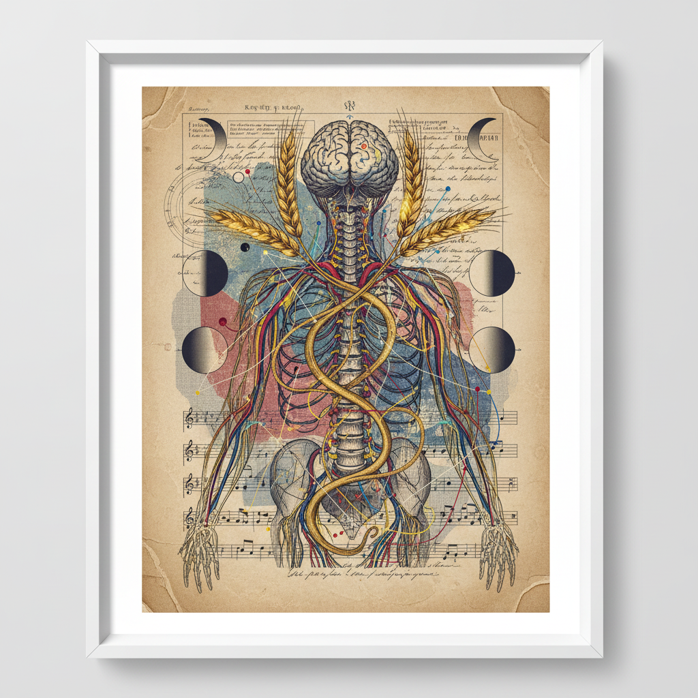
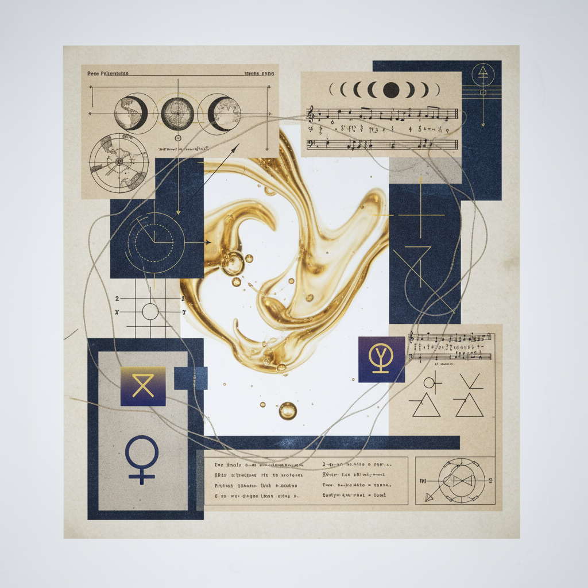

Volume III / Circulation
New Moon in Taurus to Full Moon in Sagittarius
"From Mind to Gut: Grounding visionary concepts through the ritual of service."

Primary Correspondence
Nervous System & Higher Mind
The Sagittarius influence expands the electrical signals of the mind, seeking horizons and truth. It is the architect's blueprint, the map before the journey.
Somatic Anchor
The Digestive System
Taurus mandates the alchemy of the gut. Here, visionary fire is cooled into practical nutrients. The physical process of breaking down the complex into the useful.

Fig. 03 — Transmutation
Fourteen Days of Integration
Phase: Waxing Gibbous
The Clinical Protocol
To manifest the Sagittarian vision, one must honor the Taurean pace. This week, focus on monotonous tasks as meditations. The "Mind to Gut" path is paved with repetitive, grounding service.
Research Phase
Analyze the data of your own digestion. How does your body respond to belief?
Clinical Observation